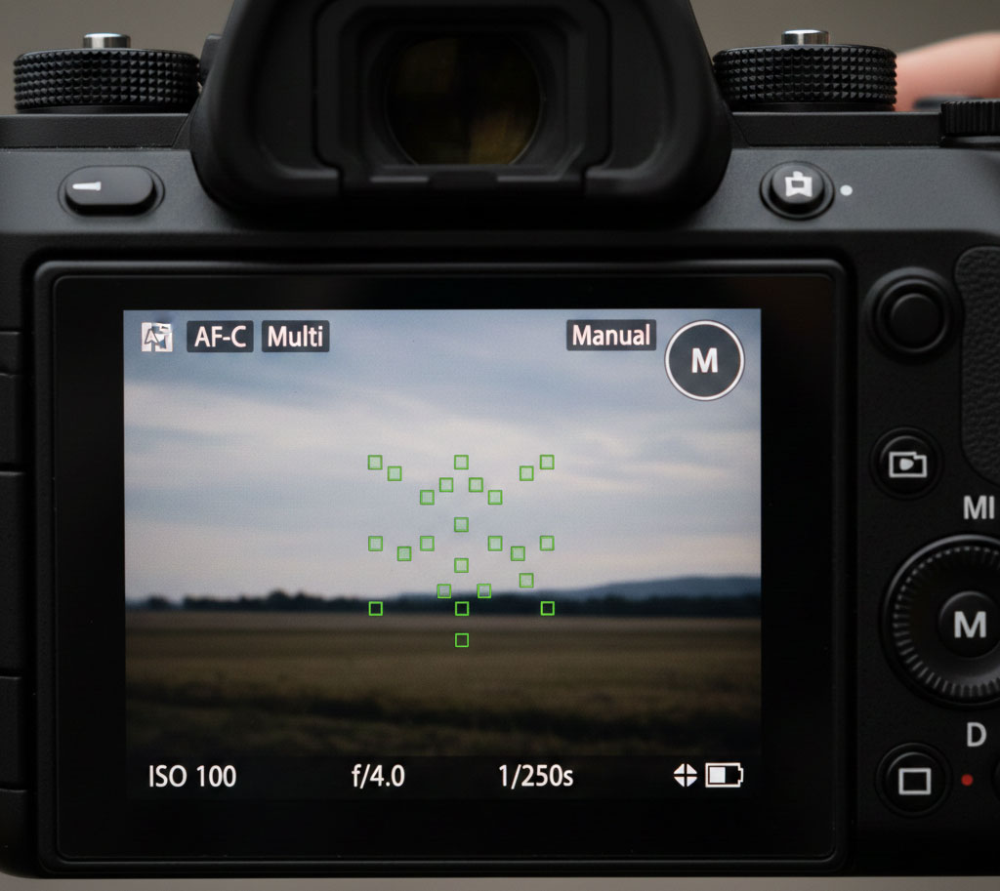

Autofocus Modes
Most cameras and phones offer at least two primary autofocus modes: single-shot focus for still subjects and continuous focus for moving subjects.
Single-shot focus locks focus once you half‑press the shutter or tap the screen, making it ideal for portraits, landscapes, or still life scenes.
Continuous focus constantly updates as your subject moves, which is better for kids running, pets, or sports.
